Card Grimoire
Tarot Cards
 Ace of Cups
Ace of Cups Ace of Pentacles
Ace of Pentacles Ace of Swords
Ace of Swords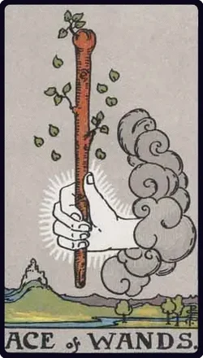
Ace of Wands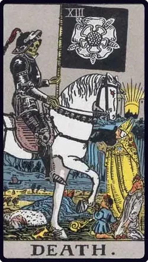
Death III of Cups
III of Cups III of Pentacles
III of Pentacles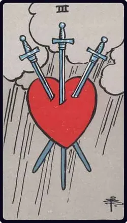
III of Swords III of Wands
III of Wands II of Cups
II of Cups II of Pentacles
II of Pentacles II of Swords
II of Swords II of Wands
II of Wands IV of Cups
IV of Cups- IV of Pentacles
- IV of Swords
 IV of Wands
IV of Wands IX of Cups
IX of Cups- IX of Pentacles
 IX of Swords
IX of Swords- IX of Wands
 Judgement
Judgement Justice
Justice King of Cups
King of Cups King of Pentacles
King of Pentacles King of Swords
King of Swords King of Wands
King of Wands Knight of Cups
Knight of Cups- Knight of Pentacles
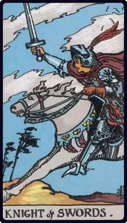
Knight of Swords- Knight of Wands
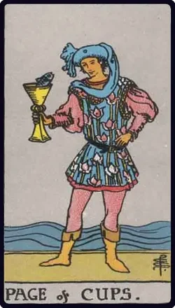
Page of Cups- Page of Pentacles
 Page of Swords
Page of Swords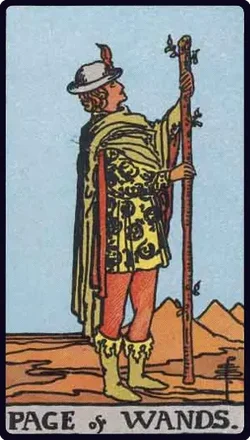
Page of Wands Queen of Cups
Queen of Cups Queen of Pentacles
Queen of Pentacles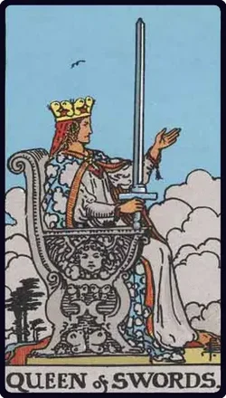
Queen of Swords- Queen of Wands
 Strength
Strength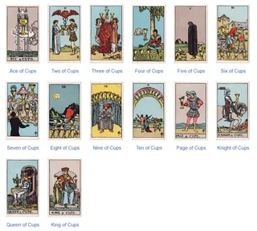
Suit of Cups Suit of Pentacles
Suit of Pentacles Suit of Swords
Suit of Swords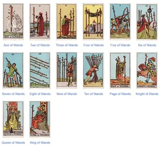
Suit of Wands- Temperance
 The Chariot
The Chariot The Devil
The Devil The Emperor
The Emperor The Empress
The Empress The Fool
The Fool The Hanged Man
The Hanged Man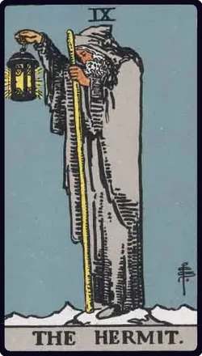
The Hermit- The Hierophant
 The High Priestess
The High Priestess The Lovers
The Lovers- The Magician
 The Moon
The Moon- The Star
 The Sun
The Sun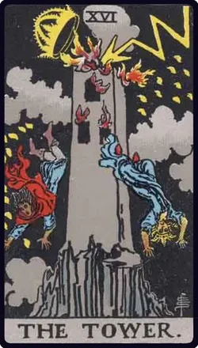
The Tower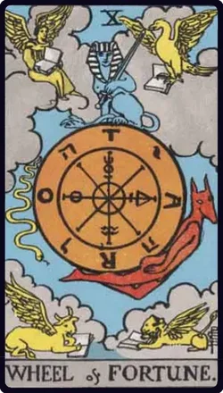
The Wheel of Fortune- The World
 VIII of Cups
VIII of Cups VIII of Pentacles
VIII of Pentacles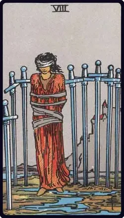
VIII of Swords VIII of Wands
VIII of Wands VII of Cups
VII of Cups VII of Pentacles
VII of Pentacles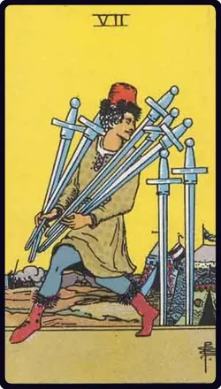
VII of Swords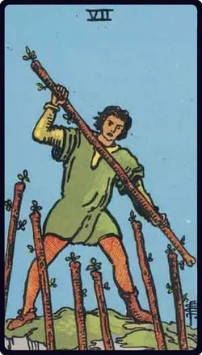
VII of Wands VI of Cups
VI of Cups- VI of Pentacles
 VI of Swords
VI of Swords VI of Wands
VI of Wands V of Cups
V of Cups V of Pentacles
V of Pentacles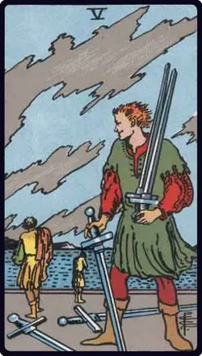
V of Swords V of Wands
V of Wands X of Cups
X of Cups- X of Pentacles
 X of Swords
X of Swords X of Wands
X of Wands
Tarot Spreads
Career & Money 143
- Acting or Producing Career Spread
- Alternative Funding Spread
- Ambitious Venture Spread
- Animal Rescue Center Spread
- Anti-Debt Spread
- Astronomer or Space Scientist Spread
- Balancing the Books Spread
- Bargain-Hunting Spread
- Best-Selling Author Spread
- Bird Wing Spread
- Business and Love Partner Spread
- Business Inertia Spread
- Business Relocation and Expansion Spread
- Career Blocked by Prejudice Spread
- Career or Balance Spread
- Celebrity Makeup Artist Spread
- Chance of a Lifetime Spread
- Clear Communication Spread
- Climbing to the Top Spread
- College Scholarship Spread
- Company Takeover Spread
- Compass Spread
- Contract Renewal Spread
- Creativity to Self-Employment Spread
- Cross of Remembrance Spread
- Crossroads Spread
- Dating a Celebrity Spread
- Day Job or Side Business Spread
- Debt After Breakup Spread
- Detailed Workplace Conflict Resolution Spread
- Diamond Spread
- Dream Job Spread
- Dried-Up Money Source Spread
- Ex-Partner Money Demands Spread
- Facing Debt Spread
- Fame and Fortune Spread
- Fame as a Dancer Spread
- Fashion Designer Spread
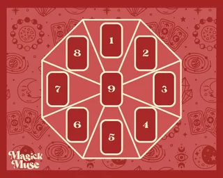
Feng Shui Spread- Financial Compensation Claim Spread
- Financial Exploitation Spread
- Financial Restoration Spread
- Financial Solvency Spread
- Financial Speculation Spread
- Financial Year Ahead Spread
- Fortune-Telling Oracle Spread
- Four Weeks to Payday Spread
- Genuine Offer Spread
- Helping an Adult Child Spread
- Hollywood Break Spread
- House Next Door Spread
- Increase My Cash Flow Spread
- International Journalist Spread
- Internet Fame and Fortune Spread
- Investment Syndicate Spread
- Job Application Spread
- Job Search Spread
- Leisure Investment Spread
- Living Someone Else's Dream Spread
- Loan Consolidation Spread
- Local or Online Trading Spread
- Main Opposition for Promotion Spread
- Major Project Management Spread
- Major Sports Team Spread
- Major Working Life Review Spread
- Make or Break in Business Spread
- Monetizing Your Talent Spread
- Money-Spinning Idea Spread
- Money Drain Spread
- Monthly Business Plan Spread
- Never-Repaid Loan Spread
- New Age or Crystal Store Spread
- New Business After Retirement Spread
- New Competing Business Spread
- New Job Success Spread
- New Workplace Spread
- Official Payment Dispute Spread
- Olympic Games Spread
- Overcoming Competition for Promotion Spread
- Overlooked in the Family Business Spread
- Overseas Job Spread
- Partner's Extravagance Spread
- Passion or Security Spread
- Pension Fund Offer Spread
- Permanent Job Spread
- Permanent Move Overseas Spread
- Practical or Pleasure Spread
- Professional Athlete Spread
- Property Income Spread
- Property or Business Ladder Spread
- Psychic Business Launch Spread
- Quit or Confront Spread
- Quitting a Going-Nowhere Job Spread
- Railroaded Into the Family Business Spread
- Raising Your Profile Spread
- Real Estate Fortune Spread
- Reinvest or Stay Spread
- Relative or Friend as Business Partner Spread
- Repayment Pressure Spread
- Reviving a Business Spread
- Risking All for Business Spread
- Sale Timeline Spread
- Saving for the Future Spread
- Sharing Financial Resources Spread
- Shopaholic Spread
- Slow-Starting Business Spread
- Solo or Partnership Spread
- Songwriter or Musical Spread
- Special Purchase Spread
- Spending Family Inheritance on a Dream Trip Spread
- Spiritual Center Spread
- Starting Your Own Business Spread
- Stepping Back From the Family Business Spread
- Stock Market Fortune Spread
- Struggling Financially Spread
- Studying Later in Life Spread
- Successful Artist Spread
- Successful Juggler Spread
- Successful Musician Spread
- Successful Politician Spread
- Success or Fulfillment Spread
- Suspected Business Cheating Spread
- Takeover or Merger Spread
- Talent Contest Finals Spread
- Talent Scout Discovery Spread
- Top Orchestra Spread
- Training Course Investment Spread
- Travel vs Buying a House Spread
- Triangle Three-Step Spread
- TV Reality Show Spread
- TV Talent Show Spread
- Twelve Months to Success Spread
- Undeserved Financial Loss Spread
- Unexpected Windfall Spread
- Unsellable Business Spread
- Urgent Money Spread
- Volunteer for Charity Overseas Spread
- Working From Home Spread
- Working Week Spread
- Workplace Conflict Cause Spread
- Workplace Dishonesty Spread
- Workplace Major Conflict Spread
- Worthwhile Invention Spread
Celtic Cross Style 3

Chakra 1
Daily Draw 3

Decision Making 120
 5 Pointed Star Spread
5 Pointed Star Spread- Action-Reaction-Outcome Spread
- All-or-Nothing Decision Spread
- Ambitious Venture Spread
- Becoming Engaged Spread
- Best Date Spread
- Best Possible Outcome Spread
- Blended Family Spread
- Breaking Through Fear Spread
- Career or Balance Spread
- Chance of a Lifetime Spread
- Choosing a Honeymoon Spread
- Cliques and Bullying Spread
- Company Takeover Spread
- Considering a Baby Spread
- Crossroads Spread
- Day Job or Side Business Spread
- Decisions, Decisions Spread
- Decision Through Time Spread
- Detailed Workplace Conflict Resolution Spread
- Difficult In-Laws or Stepfamily Acceptance Spread
- Difficult Person Spread
- Disagreeing About Having Children Spread
- Do-Don't-Caution Spread
- Escaping a Destructive Situation Spread
- Ex-Partner or New Love Spread
- Exes and Stepchildren Spread
- Fame and Fortune Spread
- Fame as a Dancer Spread
- Favorable Timing Spread
- Financial Speculation Spread
- Five-Year Plan Spread
- Forced Relocation Spread
- Four Corners Travel Spread
- Genuine Offer Spread
- Good Luck Spread
- Greatest Ambition Spread
 Greatest Challenge Spread
Greatest Challenge Spread- Greatest Strength Spread
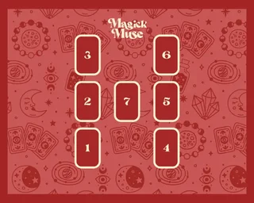
Harmony Spread- Hollywood Break Spread
- Home or Away Spread
- Horseshoe Spread
- House Next Door Spread
- In-Laws vs Partner Loyalty Spread
- Investment Syndicate Spread
- Inviting a Difficult Relative Spread
- Known-Unknown-Future Spread
- Lasting Commitment Spread
 Lasting Results Spread
Lasting Results Spread- Leisure Investment Spread
- Loan Consolidation Spread
- Local or Online Trading Spread
- Looking Ahead Spread
- Meeting Your Online Love in Person Spread
- Monetizing Your Talent Spread
- Money-Spinning Idea Spread
- Month Ahead Spread
- Moving in Together Spread
- Negotiation and Peace-Making Spread
 One Question Spread
One Question Spread- Online Dating Spread
- Options Spread
- Overcoming Bad Luck Spread
- Overcoming Intimidation Spread
- Overcoming Shyness Spread
- Overcoming the Hurdle Spread
- Overseas Job Spread
- Partner Wants Freedom Too Spread
- Passion or Security Spread
- Pathway to Justice Spread
- Pension Fund Offer Spread
- Practical or Pleasure Spread
- Pressured Into Marriage Spread
- Property Income Spread
- Property or Business Ladder Spread
- Quit or Confront Spread
- Quitting a Going-Nowhere Job Spread
- Railroaded Into the Family Business Spread
- Reinvest or Stay Spread
- Relationship Moving Too Fast Spread
 Relocation Spread
Relocation Spread- Resisting Family Conformity Pressure Spread
- Risking All for Business Spread
- Sabbatical Spread
- Setting the Wedding Date Spread
- Seven Colors of the Rainbow Spread
- Significant Week Spread
- Situation-Challenge-Advice Spread
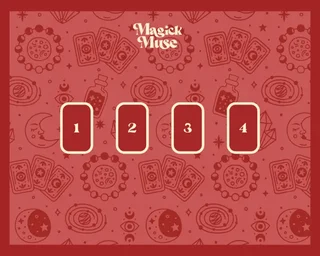
Situation-Obstacle-Action-Outcome Spread- Six Weeks Ahead Spread
- Solo or Partnership Spread
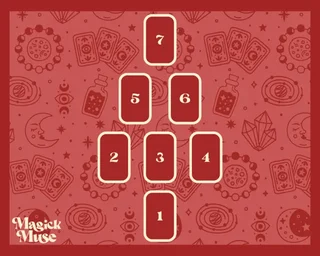
Solstice Tree Tarot Spread- Special Purchase Spread
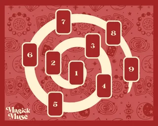
Spiral Spread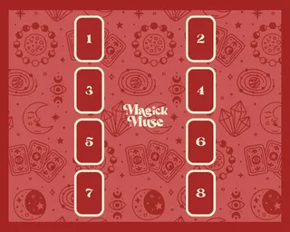
Spring Changes Spread- Stock Market Fortune Spread
- Stop-Start-Continue Spread
 Strategy Spread
Strategy Spread- Struggling Financially Spread
- Study Path Spread
- Success or Fulfillment Spread
 Super Seven Spread
Super Seven Spread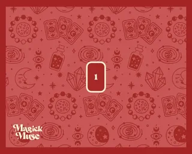
Test Outcome Spread- Three-Card Modifier Spread
- Three Ahead Spread
- Top Orchestra Spread
- Torn Between Commitments Spread
- Tower of Freedom Spread
- Training Course Investment Spread
- Travel Alone or Persuade Spread
- Travel vs Buying a House Spread
 Trustworthy Spread
Trustworthy Spread- Unexpected Windfall Spread
- Urgent Money Spread
- Venue Choice Spread
- Waiting for Commitment Spread
- Walking Away From the Relationship Spread
- Wedding Celebration Size Spread
- Week Plus One Spread
Health & Healing 5
Justice & Ethics 7
Love & Relationships 96
- Accused of Cheating Spread
- Adding to the Family Spread
- Aging Parent's Independence Spread
- Asking for a Date Spread
- Becoming Engaged Spread
- Best Date Spread
- Blended Family Spread
- Business and Love Partner Spread
- Choosing a Honeymoon Spread
- Circle for Restoring Family Unity Spread
- Considering a Baby Spread
- Contacting an Old Love Spread
- Controlling Partner Spread
- Dating a Celebrity Spread
- Dealing with Infidelity Spread
- Debt After Breakup Spread
- Difficult In-Laws or Stepfamily Acceptance Spread
- Disagreeing About Having Children Spread
- Dream Date Yes or No Spread
- Estranged Family Member Spread
- Ex-Partner Money Demands Spread
- Ex-Partner or New Love Spread
- Exes and Stepchildren Spread
- Expressing Feelings and Trust Spread
- Falling for a Best Friend Spread
- Family Mealtimes Spread
- Family Member's Addiction Spread
- Family Takes You for Granted Spread
- Family Troublemaker Spread
- Feng Shui Spread
- Financial Exploitation Spread
- Finding Your Soul Mate Spread
- First Holiday Without the Family Spread
- Forbidden Love Spread
- Fortune-Telling Oracle Spread
- Getting Over a Broken Heart Spread
- Harmony Between Generations Spread
- Helping an Adult Child Spread
- House Next Door Spread
- Immature Partner Spread
- In-Laws vs Partner Loyalty Spread
- Infatuation or Real Love Spread
- Interfering Relative or Friend Spread
- Inviting a Difficult Relative Spread
- Jealousy Issue Spread
- Lasting Commitment Spread
- Living Someone Else's Dream Spread
- Long-Distance Relationship Spread
- Love Quarrel Spread
- Love Rivals Spread
- Loyalty or Temptation Spread
- Meeting Your Online Love in Person Spread
- Moving in Together Spread
- Moving On From Separation Spread
- Negotiation and Peace-Making Spread
- Never-Repaid Loan Spread
- New Family Member First Impression Spread
- New Relationship After Betrayal Spread
- Online Dating Spread
- Overcoming Family Favoritism Spread
- Overlooked in the Family Business Spread
- Partner's Extravagance Spread
- Partner Disappears Without Explanation Spread
- Partner Wants Freedom Too Spread
- Past-Life Soulmate Spread
- Peaceful Family Celebration Spread
- Preserving the Happy Family Spread
- Pressured Into Marriage Spread
- Quiet Family Introduction Spread
- Reconnecting with an Old Flame Spread
- Relationship Moving Too Fast Spread
- Relative or Friend as Business Partner Spread
- Resisting Family Conformity Pressure Spread
- Resolving Conflict Spread
- Reuniting a Divided Family Spread
- Salvaging the Relationship Spread
- Serial Flirt Partner Spread
- Setting the Wedding Date Spread
- Sharing Financial Resources Spread
- Stepping Back From the Family Business Spread
- Successful Family Reunion Spread
- Tempted to Stray Spread
- The Dynamics of Love Spread
- The Scapegoat Spread
- Torn Between Commitments Spread
- Travel Alone or Persuade Spread
- Travel vs Buying a House Spread
- True Love Later in Life Spread
- True or False Friend Spread
- Twin Soul Recognition Spread
- Unity Spread
- Unrequited Love Spread
- Waiting for Commitment Spread
- Walking Away From the Relationship Spread
- Wedding Celebration Size Spread
- Will They Return Spread
Moon Phase 1
Past-Present-Future 7

Seasonal 10
Shadow Work 26
- Breaking Through Fear Spread
- Circle for Restoring Family Unity Spread
- Cliques and Bullying Spread
- Controlling Partner Spread
- Cross of Remembrance Spread
- Dealing with Infidelity Spread
- Escaping a Destructive Situation Spread
- Estranged Family Member Spread
- Family Member's Addiction Spread
- Family Takes You for Granted Spread
- Family Troublemaker Spread
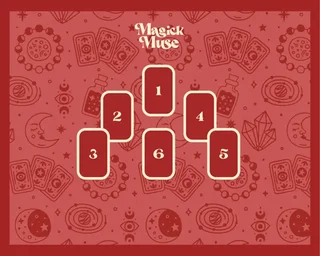
Finding Your Glamour in Your Shadow- Forbidden Love Spread
- Immature Partner Spread
- Jealousy Issue Spread
- Overcoming Family Favoritism Spread
- Overcoming Intimidation Spread
- Resisting Family Conformity Pressure Spread
- Reuniting a Divided Family Spread
- Serial Flirt Partner Spread
- Shedding Burdens for Blessings Spread
- Tempted to Stray Spread
- The Scapegoat Spread
- Tower of Freedom Spread
- Uncovering a Family Secret Spread
- Walking Away From the Relationship Spread
Spiritual Growth 30
- Adventure Sport Later in Life Spread
- Attaining a Childhood Ambition Spread
- Chakra Life Review Spread
- Developing Psychic Powers Spread
- Dream Life Already Spread
- Finding Your Glamour in Your Shadow
- Help Me Grow Spread
- Interview Your Tarot Deck Spread
- Life Journey Spread
- Move to the Ocean or Countryside Spread
- Mystical Seven Spread
- Past-Life Soulmate Spread
- Permanent Move Overseas Spread
- Psychic Business Launch Spread
- Relaxed Retirement Spread
- Researching Missing Family Generations Spread
- Reviving a Buried Dream Spread
- Self-Sufficient Living Spread
- Seven Colors of the Rainbow Spread
- Shedding Burdens for Blessings Spread
- Show-Know-Grow Spread
- Spiritual Center Spread
- Studying Later in Life Spread
- Travel the World Spread
- Twelve-Card Spread
- Twin Soul Recognition Spread
- Uncovering a Family Secret Spread
- Where Am I Going Spread
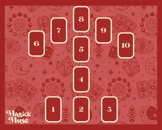
World Tree Spread- Zodiac Wheel Tarot Spread
No Spread Type 5
Lenormand Cards
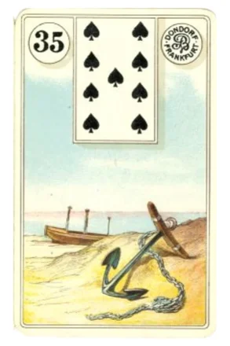
Anchor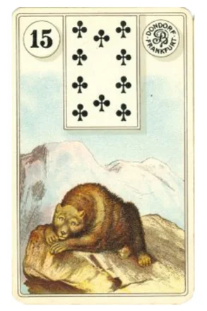
Bear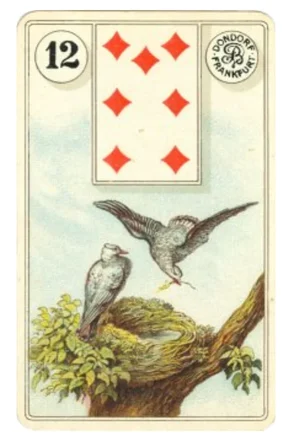
Birds Book
Book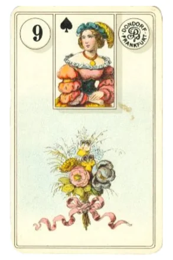
Bouquet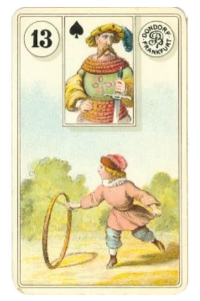
Child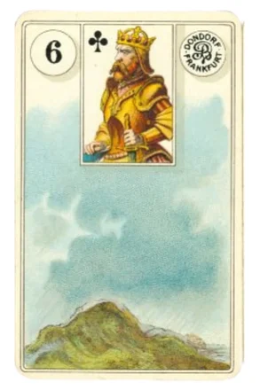
Clouds Clover
Clover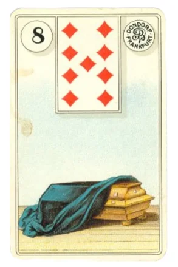
Coffin Cross
Cross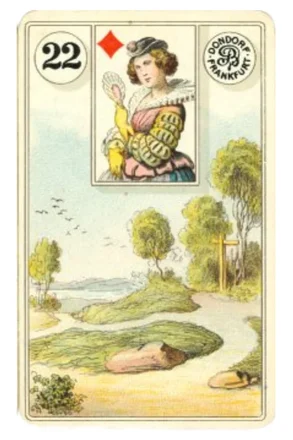
Crossroads Dog
Dog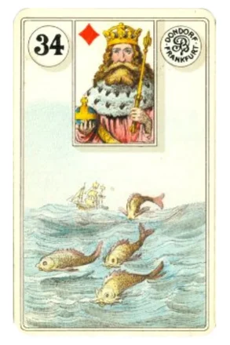
Fish Fox
Fox Garden
Garden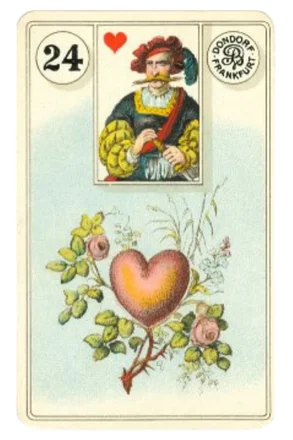
Heart House
House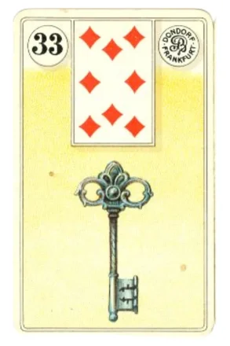
Key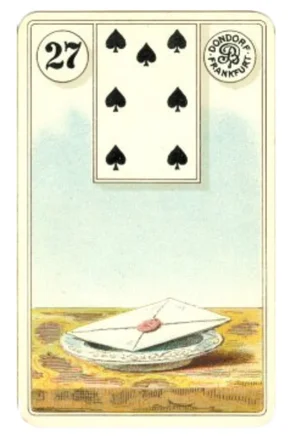
Letter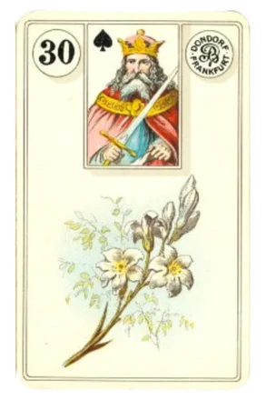
Lily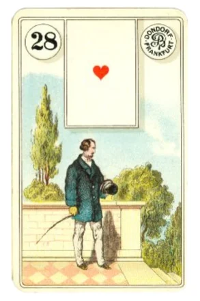
Man Mice
Mice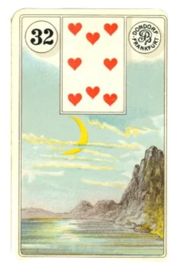
Moon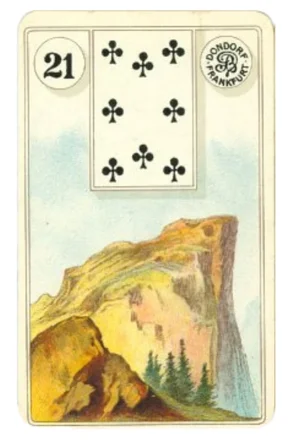
Mountain Rider
Rider Ring
Ring Scythe
Scythe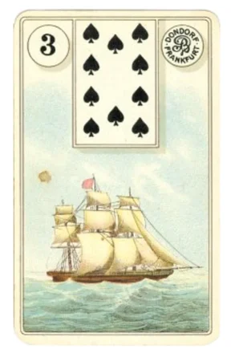
Ship Snake
Snake Stars
Stars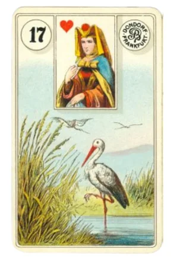
Stork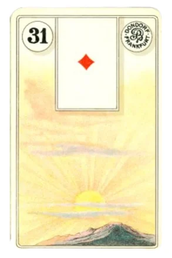
Sun Tower
Tower Tree
Tree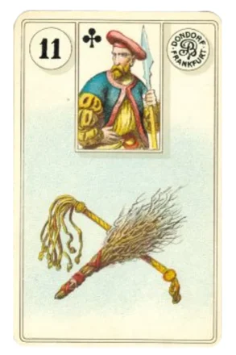
Whip Woman
Woman
Lenormand Spreads
Career & Money 1
Spiritual Growth 2
Playing Cards
- Ace of Clubs
- Ace of Diamonds
- Ace of Hearts
 Ace of Spades
Ace of Spades- Black Cards
- Clubs
- Court Cards
- Diamonds
 Eight of Clubs
Eight of Clubs Eight of Diamonds
Eight of Diamonds- Eight of Hearts
 Eight of Spades
Eight of Spades Five of Clubs
Five of Clubs Five of Diamonds
Five of Diamonds- Five of Hearts
- Five of Spades
 Four of Clubs
Four of Clubs Four of Diamonds
Four of Diamonds Four of Hearts
Four of Hearts Four of Spades
Four of Spades- Hearts
- Jack of Clubs
- Jack of Diamonds
- Jack of Hearts
 Jack of Spades
Jack of Spades- Joker
 King of Clubs
King of Clubs King of Diamonds
King of Diamonds- King of Hearts
- King of Spades
 Nine of Clubs
Nine of Clubs- Nine of Diamonds
- Nine of Hearts
 Nine of Spades
Nine of Spades- Queen of Clubs
- Queen of Diamonds
 Queen of Hearts
Queen of Hearts- Queen of Spades
- Red Cards
 Seven of Clubs
Seven of Clubs- Seven of Diamonds
- Seven of Hearts
- Seven of Spades
- Six of Clubs
 Six of Diamonds
Six of Diamonds Six of Hearts
Six of Hearts Six of Spades
Six of Spades- Spades
- Ten of Clubs
 Ten of Diamonds
Ten of Diamonds- Ten of Hearts
 Ten of Spades
Ten of Spades Three of Clubs
Three of Clubs Three of Diamonds
Three of Diamonds- Three of Hearts
 Three of Spades
Three of Spades Two of Clubs
Two of Clubs- Two of Diamonds
 Two of Hearts
Two of Hearts- Two of Spades